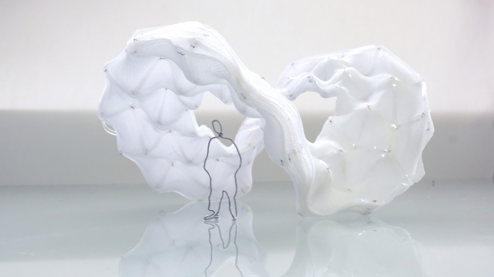
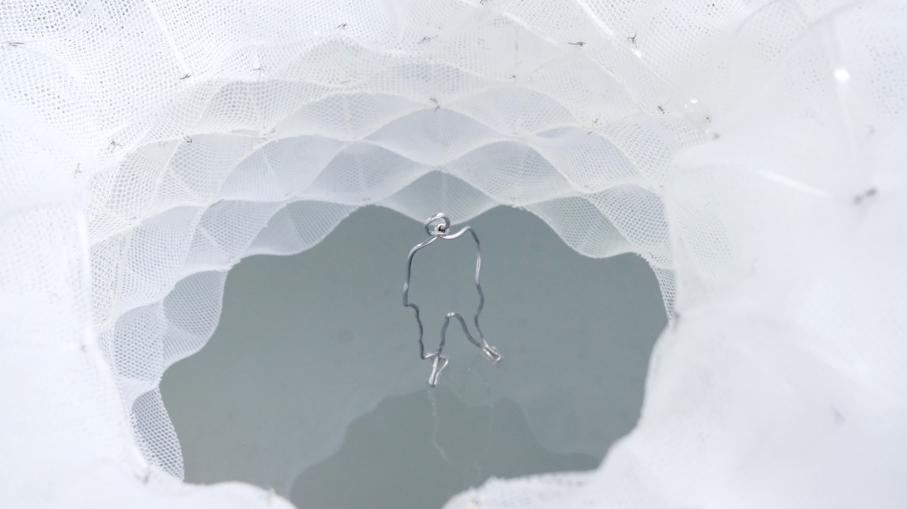
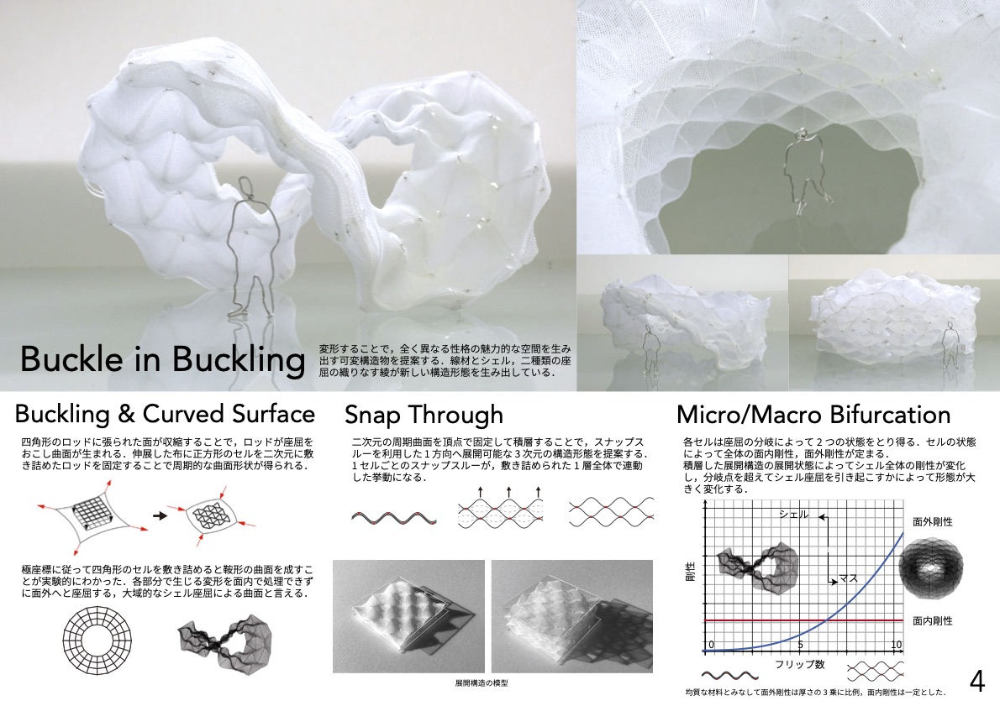
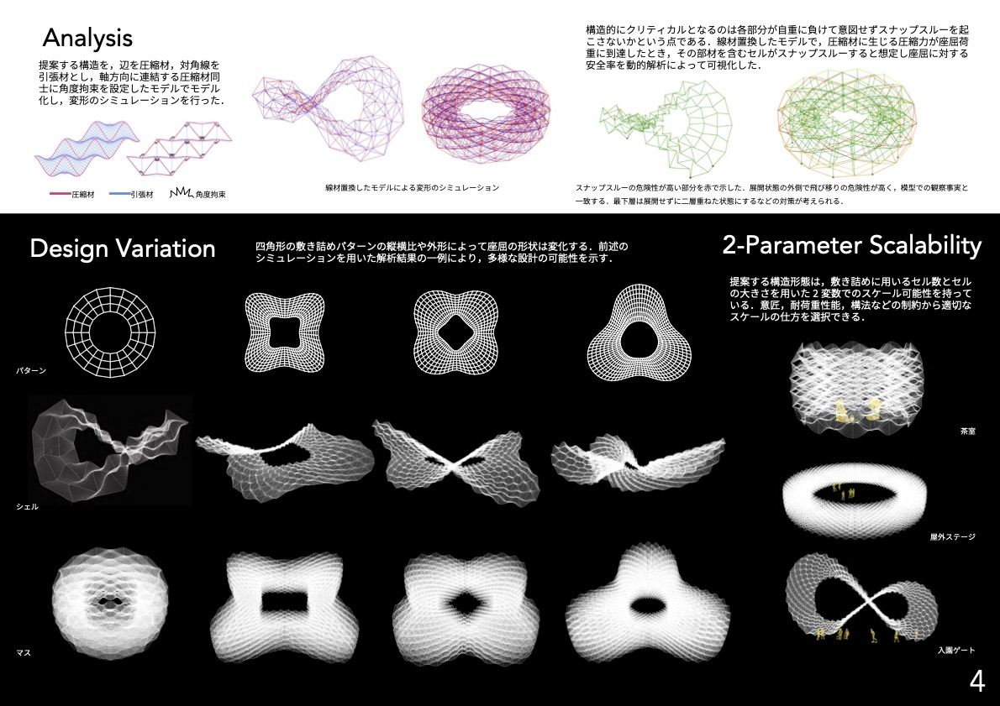

Buckle in Buckling
2022
共同制作：田崎祥 木島凪沙
変形によって空間の性格を大きく変える可変構造物の提案．線材とシェル，二種類の座屈の織りなす綾が新しい構造形態を生み出している．
平面上で製造され，鞍型曲面へと自動的に立ち上がるべンディングアクティブ構造の膜を複層することで多安定性を持つ展開構造物を設計した．各層が閉じた状態では薄いシェル状の構造となり全体が鞍型曲面をなすが，展開してマッシブな構造になると曲げ剛性が高まり，全体がシェル座屈を引き起こさずにボール状の形態をとる．
keywords
形態創生，座屈，バイスタビリティ，4Dファブリケーション，Active Textile
受賞
形態創生コンテスト2022（日本建築学会） 最優秀賞
コンテスト結果
- 
- 
- 
- 